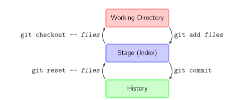
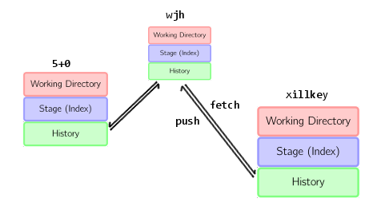
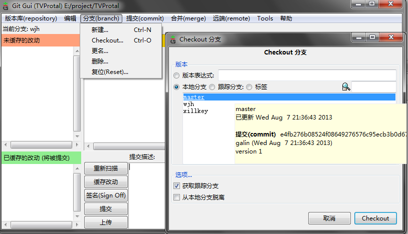
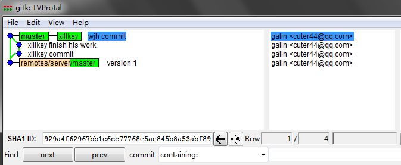
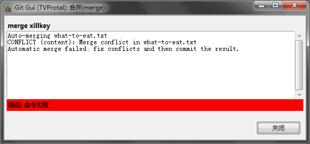
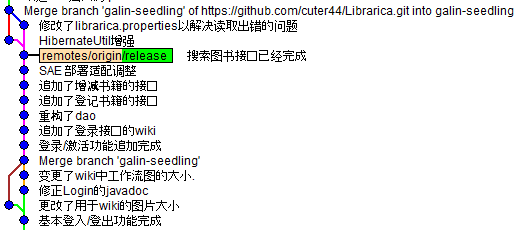
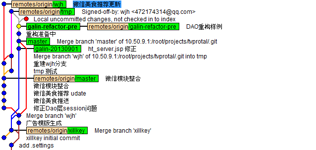

建议这么点, 理由是用户体验比较好
@author galin<cuter44@qq.com>
@license CC 3.0 BY
@version 2.0.0-build-20140421 older version -> ./hello-git-2013.html whenever you find a leak, feel free to report @github issue
通常来说这个时候应该说下 git是什么, 不过出于无障碍阅读的原则, 今年的版本决定不说了. 现在, 只需要将 git 理解成 一个可以在多人环境下随时保存和合并源代码的工具 即可.
然后, 本篇将以 5+0的脑内小剧场 和 wjh的黑历史相结合 去阐述怎么去利用git. 出于时间根本不够入门教学的初衷, 这篇教程会尽量避免复杂的东西. (但这也是git的一个特性之一, 他可以很简单, 也可以geek到完爆蓝星人智商的程度)
那就是在自机部署一个 git 了.
注意这一章不会在堂授课中讲述, 请先行完成.
一个命令搞掂:
apt-get install git
, 或者等价的包管理器指令(yum, pacman 等)
这里是适合普通人的操作步骤:
首先要下载安装包, 以下源你可以随便挑一个:
然后该干嘛干嘛, 除了某些特殊的技能点:
建议这么点, 理由是用户体验比较好

建议这么点, 理由是比较安全

建议这么点, 理由是你得给linux党一点人文关怀
这不是必修的, 不过目前来说, 有个 github id 是很潮爆的哦~才能实现全球流写代码.
比如 5+0@github ≧▽≦
NOTE 其实不只全球流那么简单, github还有很多方便我等程序猿工作的功能, 比如 jekyll 托管(提供你目前正在看的教程的托管), 简单的错误追踪, gist
HINT 因为光缆君的傲娇和GFW的病娇, 你可能要修改hosts才能科学地上网:
185.31.17.184 github.global.ssl.fastly.net

标题出自炮姐OP, 题图出自机巧少女, 图片仅供参考.
好吧目前还没有碉堡到这种↑程度咯 (´・ω・｀)
总之什么都好现在可以打开刚刚装好的git吧, 如无意外开始菜单会多出名为 Git GUI 的东西(なに? Linux? Linux党会说不需要这个教程咯...), 会看到这个↓

时间关系我们就先拿这篇教程的仓库来做范例吧, 请随意在原有基础上做修改, 因为我不在 github 上授权的话你是根本提交不了的23333
NOTE ...不过其实授权后也能随意修改, 哪怕会造成毁灭性打击都没关系, 这就是分布式源代码管理系统的彪悍之处.
好吧回来正题, 选"克隆已有版本库",

然后填入以下 param:
Source Location: https://github.com/cuter44/hello-git.git
Target Location: (自己的工程目录)
完成之后会变成以下界面:

然后可以尝试下去点 Repository > Visualize all branches history
然后你会看到一条直线, 这不奇怪, 因为这不是一个协作项目, 在我的刻意维持之下, 分支树退化成线性的. 但你仍然可以随意浏览下更新记录, 你会看到很多 ++/-- 的符号, 这些符号简明扼要地描述了我修改过哪些东西.
事实上这章说的是怎么提交代码, 跟 css 没有关系
2013年8月某日, xillkey(前端)刚来准备做网页渲染, galin(后端)在补觉, wjh(技术总监)...不知道在干嘛.
xillkey启动了电脑, 首先它需要从版本库拿到昨晚wjh合并好的新版本(假设他昨晚做的更改已经交给wjh合并了, 当然并不需要每晚合并)并创建自己的分支
HINT 分支是避免冲突的有力武器, 一条重要的准则是不要随意触动别人的分支
分支(branch) > 新建(create) ↓

这样就行了...截图时分支名字忘了填, 跟标识符一样可以随意命名, 但也跟标识符一样存在某种规范
这里假定xillkey增加了一个css文件, 这个改动会被反映在git的面板上↓

如果没看到更改, 可以点下
重新扫描(rescan)WARN 这里循例要强调一次, 请直接在你clone下来的基础上修改, 而不是复制到别的文件夹修改完再覆盖回来(╯‵д′)つ)×﹏×)
点文件名可以查看变更的内容, 也就是上一章在历史记录中看到的 ++ 和 -- 们
点图标就可以将所作的变动保存到绿色框的区域下来↓
两个框的操作是互文的, 也就是说假如你误操作了, 再点一下可以不保存修改.

HINT 在这个界面的任何操作都不会影响到你已经写好的代码, 所以请放心大胆地乱来 _(:з」∠)_
xillkey可以随时点提交(commit)保存已经缓存的改动, 提交操作不会实际上传数据到服务器, 而是将在本地生成一个保存点.
如果这时候再查看所有分支历史(Visualize all branch history)会看到这个样子

假如xillkey发现他将代码改到太糟糕想倒回去的话(比如写了一大堆才发现IE根本不鸟...), 他可以在这个界面想要回退到的节点上面点右键 > Reset xillkey branch to here, 然后代码就会被回滚到相应位置了.
若干小时后...
xillkey认为他已经完成工作了, 他可以最后commit一次, 然后点上传(push)(关于commit和push的区别, 将在章末讲述)

上传后的版本库如图↓(注意wjh在这几个小时内也做出了自己的更改)

根据老邝原本的设定是要由wjh负责做整合的. 所以此时 xillkey 只需要确认上传完了就可以关机走人了, 当然走之前还需要:
xillkey(^ω^): 搞掂, wjh记得将我改的部分合并进去~
wjh(T▽T): はい、はい。。。
NOTE 在第一次提交的时候 git 会提示你需要一个id和邮件地址, 这很重要, 因为你肯定想知道当初那行代码是谁添加进来的.
要设定自己的id,编辑(edit)>选项(options)
先上图:

git的结构图基于图解git, 卖萌图来自トラッキーのグータラな日常記録(´∀｀*)←
git 的逻辑结构分三层(废话), 首先请向上滚一小段距离, 留意下主界面和分支树两张图
Working Directory就是你叭嗒叭嗒敲的代码, 对应于在主界面的未缓存的改动和分支树上的●红点(仅在修改过而又未保存时出现)Stage是缓存但未提交的文件, 对应于主界面的已缓存的改动和●黄点History是已保存的部分, 也就是上文说的"毁灭性打击也没关系"的部分(因为保存到这里就很删不掉了), 对应于分支树上的●蓝点
HINT 你不必记住那些命令, 但你应该在我提到 commit 的时候知道我在指什么
NOTE 其实并非真的"删不掉", 前提是你能在全部副本上删掉它. 至于怎么做到, 请接着观看以下的部分.
以上这个栈独立且完整地存在于每一台参与到版本库的机器上, 而对于(wjh, xillkey, 5+0)组成的开发小队情况则会变成这样:

唔..好像透视不太对...现在请不要吐槽
这里会引入两个新操作:
推送(push)是指将自己的分支树同步到别人的机器上(也就是xillkey刚才做的)
拉取(fetch)是指将别人的分支树同步到自己的机器上
push和fetch操作都只能在History层上运行, 换言之, 这两个操作不会干扰到正在写的代码, 任何时候都可以放心执行
提交的代码一旦通过push和fetch操作散播到其他机器上, 就很难撤销了(因为散播开去了呗). 所以提交前请务必慎重检查提交内容, 千万不要将编译期的垃圾, 帐户名和密码, 胖次或者果照(喂!)提交到版本库, 不然...删-不-掉-的-哦-♪
HINT 你可以预先告诉git什么是不能提交的, 详情请
man gitignore
HINT 另外, 图示的是
中心式版本库的情况, xillkey也可以与5+0直接进行通信, 这时我们称它为分布式版本库.
(续上)
(首先请自行脑补一个黑白滤镜)
曾经, wjh每次听到"合并"这个词, 都会瞬间颓丧到就像...像...(台词机坏掉了不好意思), 然后默默打开 eclipse 逐块地复制粘贴...
(现在变回彩色的)
但是, 自从有了 git, 妈妈再也不用担心 wjh 的合并工作了, ...
(好吧实在没台词了, 去片!)
若干分钟前, wjh接到了xillkey的merge请求. 于是他叹了口气, 保存自己的工作, 打开git GUI 切换到master分支上↓

NOTE 这里, "保存自己的工作" 是指将还没写完的工作按上一章的方法提交一次. 除此之外还存在另一种恰好适用于这个场景的
储存(stash)办法
现在可以开始merge了, 点 合并(merge) > 本地合并(local merge)↓

选择xillkey的分支, 然后合并, 如果没发生冲突的话, 合并就完成了↓

很抱歉截图被我不小心覆盖掉了, 现在这个是PS出来的orz...
直到现在为止, 你大概已经有个模糊的概念了: git的分支树就像RPG的游戏大纲, 可以分支可以合并, 有 good end 也有 bad end. 中间的每一个节点就是故事的一个章节.
或者...暗示了什么, 每一次开发都是一次大冒险啊╮(╯□╰)╭
分支之间是互相隔离的, 你在本机上的分支branch在别人的机器上会显示为remotes/host/branch, 你可以随时与任何分支进行交互(检出(checkout), 提交(commit), 合并(merge), 变基(rebase), etc.).
git的灵活性是建基于分支特性上的, 因为可以在很大的自由度上操作分支, 比如可以在同一时间存在多套代码(当你为一个功能想到两种实现的时候), 比如可以跨步合并("读后写"的问题). 这些都会在生产环境中遇到, 但现在不会详细论述.
对于 ACM/OI 经验者这里有个额外的tip: 试想象一个非线性链表以及各种指针.
现在, 拿出你的笔电吧, 我们要订外卖了~
5点通常都是叫外卖的时候, 既然有了 git 的合并功能, 那么在 QQ 上吆喝谁吃什么再手动收集显然是不科学的事.
所以, wjh创建了一个调查表what-to-eat.txt来收集订餐状况.
what-to-eat.txt(master分支的内容)
(空白)
饱睡的galin听到"外卖"两字瞬间暴起以最快速度完成了checkout-commit-merge操作:
what-to-eat.txt(galin, master分支的内容)
galin(ﾟДﾟ;):我要吃肉卷饭!!
而xillkey则慢了一步, 在galin修改文件时他才刚好fetch完, 当他merge的时候, 冲突发生了:

此时同一文件的不同状态是:
what-to-eat.txt(xillkey分支的内容)
xillkey(‾▽‾"):我要烤鸭饭好了.
what-to-eat.txt(master分支的内容)
<<<<<<< HEAD
galin(ﾟДﾟ；):我要吃肉卷饭!!
=======
xillkey(‾▽‾"):我要烤鸭饭好了.
>>>>>>> xillkey
同时git主面板会变得色彩斑斓:

请不要吐槽乱码因为那不是重点
其中三行黄色的(对应源文件的三行)就是git加上去的, 它提示了哪里有冲突, 以及冲突的内容. 你需要用文本编辑器修正到你需要的结果, 删除git添加的标记, 然后才能继续提交.
这里按照场景应该将两行都保留下来, 所以直接删掉第1,3,5行.
然后再次进行 缓存改动(stage), 提交(commit) 即可.
如果你什么都不改或者漏了哪里没改的话, 你将会被git吐槽:
愚蠢的蓝星人你还没有解决冲突呢真的要保存吗? >是(灰色) >否
大多数情况下 git 能够自动理解要怎么合并你的文件, 就像上一章那样(我们称之为fast-forward). 但假如多个人同时修改文件的同一处地方, 就有可能超出它的理解范围了, 这时它需要向人类询问该怎么办(也就是conflict).
所以你也猜到了, 要避免冲突, 最好的办法就是事先要约定好各自可以动的文件和命名域. 5+0从云宏离职部分原因就是队友太水经常引发冲突.
这里收集了自2013年开始935在git实践中遇到的各种不合理状况:

普通青年: 以单一的版本作为根, 有序地分支和合并分支.

作死青年: 给别人分发代码时没有附带版本化信息, 拿回来后合并出一吨的冲突只好手动解决.
↓ 这是一个没什么价值的提交记录, 因为它等于什么都没说
整合
↓ 这是相对好的实践, 简明扼要地指出这次提交修改了什么
登录/激活功能追加完成
+ Web API, 详情请参见javadoc
+ /authorize/register
! 现在还不能发邮件, 但是会通过json返回激活之必要参数
+ /authorize/activate
* /authorize/login
+ 追加了样例
* /authorize/logout
+ 追加了样例
* /authorize/getRsaKey
+ 追加Criteria机能, 详请参考wiki:Criteria
+ 追加了用于RSA加密的实用工具, 详请参考wiki:服务器部署指南
不过, 具体采用何种实践其实也是自由的, 这只是一个建议而已.